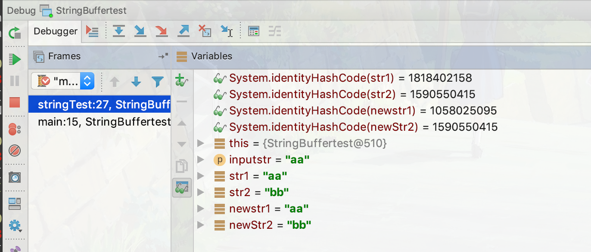

看了一篇讲Java面试里提到的关于字符串的文章， 每周10道Java面试题：String, String Pool, StringBuilder，同时看了一些JDK源码，学到了不少知识
JDK版本：1.8
常量池
对于像是 String a = "123" 式子中的 123，在编译的时候就可以确定的值，就会被存放在JVM的常量池中，那么，如果之后进行如下操作
1 | String str1 = "123"; |
那么，输出的结果就应该是 true，因为str1和str2都指向常量池中的同一地址，但是如果是下面的式子
1 | String str1 = "123"; |
那么结果就是 false了，因为对于str2，在编译阶段它指向的值是不确定的，所有它指向的应该是堆中的某个数值。
但是如果单单就看这个语句
1 | String str2 = new String("123"); |
问这个语句总共创建了几个String对象，那么答案是1或2，因为如果之前未使用过常量 123，那么就会创建2个对象，一个是你的Class被ClassLoader加载时，你的”123”被作为常量读入，在常量池里创建了一个共享的”123”，然后，当调用到new String("123")的时候，会在heap里创建这个new String(“abc”); 而如果之前使用过123，那么就会直接从常量池中返回对象123，只用创建对象str2。
那么，有没有什么方法可以将heap中的字符串强制放回到常量池中呢，当然是有的，String的intern可以将字符串的值放入常量池中，如果常量池中已存在相同的值，则返回常量池中原有值的引用，否则就返回放入之后的值的地址引用，举个例子吧
1 | void stringTest(String inputstr) { |
运行结果如下，通过使用 System.identityHashCode() 查看他们内存地址，注意，这里不能使用String自带的hashCode，因为这个方法以及被他重写了,是根据当前字符串的值生成的

可以看到，str2和newStr2的地址是相同的，因为语句 String str2 = "bb"; 首先在常量池中创建了 “bb” 对象，而newStr2只是单纯地接收了常量池中指向它的引用而已。但是str1与newStr1就不同了，str1的值是在运行时动态生成的，所所以是存放在堆中的，而调用了 intern 方法之后，系统为它创建了一个新对象，并存放在常量池中，最后返回常量池中的引用，赋给newStr1。
同时，注意到 StringBuilder 的 toString() 方法，源码是这样的
1 |
|
每次toString都创建了一个新的 String 对象，所有想使用它来生成对象锁的不行的，必须在后面加上 intern 方法才能保证指向的对象一致，否则就会向这位博主一样采坑
重载”+”
有没有想过Java是如何处理比如下面这段程序的？
1 | String a = "12" + "21"; |
看看字节码吧，先使用 javac 生成 .class 文件，再使用 javap 查看字节码，相关内容如下
1 | ...... |
what??，常量池中直接就有了…..，好吧，那再换一个
1 | public class StringBuffertest { |
相关内容如下
1 | .... |
打住，这里居然引入了 StringBuilder！接着往下看
1 | ... |
清楚了，其实就是相当于是调用了 StringBuilder 进行拼接字符串的操作，在瞧一眼append的源码：(由于它是直接使用它父类 AbstractStringBuilder 的同名方法，那就直接看它吧)
1 | public AbstractStringBuilder append(String str) { |
为了内置数组处理容量不够，特别设立了 ensureCapacityInternal 方法，在不够的时候再生成一个新的数组；为了防止传入的是空对象，特别设立了 appendNull方法，把 null对象存储为 null的字符数组。为开发人员的严谨点赞。下面的程序为什么会输出 “null!” 应该就很清楚了吧
1 | String str = null; |
把 ‘+’ 转变为 StringBuilder 使用append方法，如果是null的话将变成字符数组，内容为 “null”。话说 System.out.print 也有处理 null 的机制，源码如下
1 | public void print(String s) { |
真是简单粗暴2333，上述许多内容都参考了这篇文章：Java String 对 null 对象的容错处理
字符串比较
对于字符串之间的比较应该都十分清楚了的，用 == 比较引用十分相同，使用 equals 比较数值是否相同，而一切的对象的祖先都是Object，那Object中的的equals是什么样子的呢
1 | public boolean equals(Object obj) { |
这个方法的作用就等价于 ==,那String一定重写了这个方法，去看看String的方法吧
1 | public boolean equals(Object anObject) { |
思路也是比较清楚的，先比较引用是否相同，再比较是否是String的实例，之后比较数值的长度是否相等，最后再比较值是否相同，但是其中比较数组中值是否相同的循环看起来觉得有些奇怪，为什么既要操作变量n又要操作变量i，而不是像普通写的那样i++，然后和n比较是否完成了遍历。在网上找了一圈，找到一个感觉比较靠谱的解答：
i– 操作本身会影响CPSR(当前程序状态寄存器)，CPSR常见的标志有N(结果为负), Z(结果为0)，C（有进位），O（有溢出）。i > 0，可以直接通过Z标志判断出来。
i++操作也会影响CPSR(当前程序状态寄存器)，但只影响O（有溢出）标志，这对于i < n的判断没有任何帮助。所以还需要一条额外的比较指令，也就是说每个循环要多执行一条指令。
简单来说，跟0比较会少一条指令。所以，循环使用i–，高端大气上档次。
来源于此：JDK源码中的一些“小技巧”
最近在慕课网学习java课程，课程中老师比较字符串是否相等并没有上面的这个方法，而是用 Objects.equals，为什么呢，还是用源码说话的吧
1 | public static boolean equals(Object a, Object b) { |
就是省去了是否为 null 的判断。
听说自从JDK1.7之后 switch 就支持了String类型了，那么它判断的底层原理是否也是使用equals了呢？看看字节码把
这个是源代码，注意两个局部变量都使用了final
1 | public void test(String str) { |
然后打开字节码文件，发现生成了好多好多代码，放弃，幸好Intellij IDEA支持反编译，直接打开 .class 文件，发现java编译器之前的代码变成了这个样子
1 | public void test(String var1) { |
这不就是原始的switch语句吗，怪不得如果那两个局部变量比较final会给你报错呢，在编译阶段就调用 hashCode 方法给转成int数了，其实就是一个语法糖吧，但为什么已经验证了hashCode相等，还要再使用 equals 再比一次值呢，那是应为 hashCode使用在哈希表中档key用的，再优秀的生成key的算法都可能会产生冲突，参考这篇文章：Java 中的 String.hashCode() 方法可能有问题？